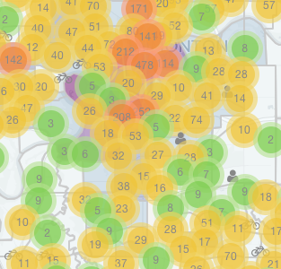
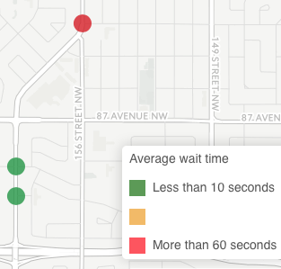
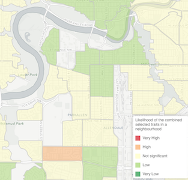
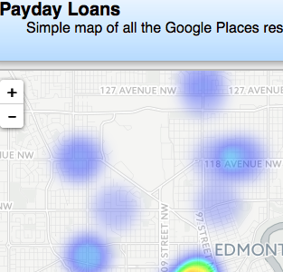
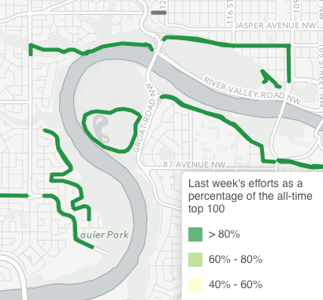
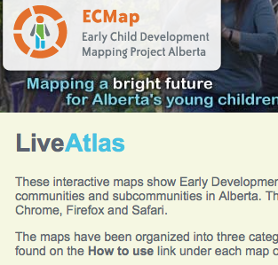

|  |
Paths For People. My main winter biking has attracted a little attention and I was contacted by Paths For People to make a few maps. They can explain things better than I can so go to their website, join up, and contribute. Reported collisions between drivers and cyclists/pedestrians |
|  |
Edmonton Beg Buttons. The City of Edmonton's Transportation Master Plan is supposed to prioritize walking above all other forms of transportation. The City also adopted Vision Zero, the goal to have zero traffic fatalities or injuries. Despite these two moves by the City, citizens who choose sustainable transportation options in the city feel like the private automobile still rules the roads. It often feels that even when the City adds infrastructure for pedestrians and cyclists, there are little things that make the new infrastructure sub-par from a user perspective. One example is getting crosswalk lights but then having very long delays between pushing the button to request to cross and the light actually changing. This map looks to capture the user experience of "beg buttons" in Edmonton. Some lights change as soon as the button is pressed while others take well over a minute. This is a citizen science project so please help out. Just time how long it takes for lights at a pedestrian crosswalk to change after the button is pressed. Either add that time to its existing location or add the location to the map. |
|  |
Open Data Day 2016. Early in 2016, the City of Edmonton launched their Open Analytics Map. While I generally find it okay, I believe the census data has a major flaw in how it's displayed. Go take a look and see if you notice the same issue. I'll wait. Did you notice a neighbourhood like Oliver shows up as having lots of employed AND unemployed? That's right, the map reports counts. Oliver has a lot of people in it so it shows up as having a large value in almost every census statistic. I tweeted the City, they defended using counts, and said rates may come later. Here's my map. I only had four hours during Open Data Day 2016 for my own personal hackathon in my basement so I only selected four variables at nearly random. So that I can combine the data, I'm reporting Z-scores of the rate of each variable. That is to say, I calculated the unemployment rate in each neighbourhood and then calculated the Z-score. You can start reading about Z-scores here, if you like. I decided to add the Z-scores so a large positive value means the neighbourhood is high in all of the selected attributes. I thought about multiplying but then large positive values just mean a neighbourhood is high or low on two values. A large negative value means one attribute is high and the other low. If three or four attributes are selected, things get more confusing. I thought about only allowing three layers to be selected and then playing with RGB values. I'm sure there are other, better ways to display the data. I know it's not perfect but I think it shows characteristics of Edmonton neighbourhoods better than raw counts. Use the link below to tell me how you really feel about it. |
|  |
Payday loans. This is a little map I threw together for Kris, a social worker with the City of Edmonton. He tweeted that he was going to be working with people hooked on or people who might be susceptible to predatory loans. It sounded like an interesting idea to see where predatory loan companies were clustered. A quick Python script hitting the Google Places API and I had the database for a map. As you can see, there are indeed clusters. Update: I was happy to hear in the 2016 speech from the throne that the provincial government will attempt to stop predatory lending. |
|  |
Strava Winter Biking. This map no longer works since Strava changed their API due to privacy concerns.. This map attempts to use Strava segment data to show biking conditions. The theory is that cyclists will travel slower when conditions are not favourable and, by comparing recent times to historical times, cycling conditions can be approximated. A Python script is run to search for Strava segments and add them to a CartoDB database. A second Python script can then be run periodically to collect all segment efforts over a recent time span and the current leaderboard for that segment. There are some shortcomings though. To see the conditions for a particular segment, it must have been added to the database. Segment suggestions can be sent to the e-mail below. The data also require timely updates. This means both that people must ride the segments and upload the data to Strava and that the Python script to update the segment times must be run frequently. There will also be a response lag in the data due to extreme weather events. Currently, "recent" segment efforts means the last seven days. Some experimenting will be done with this time window as too long means the data will not respond to weather events quickly but too short will likely mean no data as segment efforts will quickly become outdated. |
|  | ECMap LiveAtlas. These interactive maps show Early Development Instrument (EDI) results, socio-economic data and information on community resources for communities and subcommunities in Alberta. The maps also show administrative boundaries for the province. Please note that LiveAtlas works best in Chrome, Firefox and Safari.I worked at ECMap as a Mapping Analyst from September 2010 until March 2015, when the project was closed due to a lack of funding from the provincial government. I wrote the LiveAtlas originally using esri's Javascript API but I rewrote it using Leaflet so that it would be much less expensive to maintain after ECMap closed. |
|
Questions? Comments? Send e-mails here |